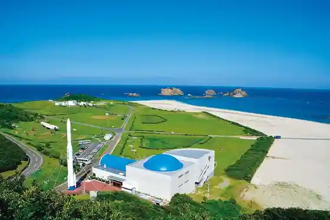
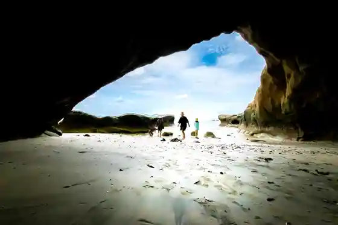
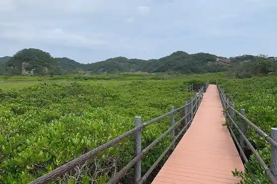

Shushi Shima Uchu Center Uchu Kagakugijutsukan
Minamitane, Kagoshima · 0997-26-9244 · Official / source link

Sen Za no Iwaya
Minamitane, Kagoshima · 0997-26-1111 · Official / source link

Shushi Shima Mangurobu Park
Minamitane, Kagoshima · 0997-26-1111 · Official / source link

Kadokura Misaki
Minamitane, Kagoshima · 0997-26-1111 · Official / source link
Minamitane Kawauchi Onsen Center
Minamitane, Kagoshima · 0997-26-2510 · Official / source link
Hirota Iseki Museum Kokushi Ato Hirota Iseki Park
Minamitane, Kagoshima · 0997-24-4811 · Official / source link
Minamitane Kanko Bussan Kan Tonmii Market
Minamitane, Kagoshima · 0997-26-2444 · Official / source link
Tanegashima Akagome Kan
Minamitane, Kagoshima · 0997-26-7444 · Official / source link
Homan Shrine
Minamitane, Kagoshima · 0997-26-1111 · Official / source link
Shushi Shima Kayakku Tanken
Minamitane, Kagoshima · 0997-26-1111 · Official / source link
Uchugaoka Park
Minamitane, Kagoshima · 0997-26-1111 · Official / source link
Hamada Beach
Minamitane, Kagoshima · 0997-26-1111 · Official / source link
Takezaki Coast
Minamitane, Kagoshima · 0997-26-1111 · Official / source link
Hase Park
Minamitane, Kagoshima · 0997-26-1111 · Official / source link
Shushi Shima Shinsaku Farm Tankan Shukaku Experience
Minamitane, Kagoshima · 0997-26-7108 · Official / source link
Nanairo Kambo Tokoro
Minamitane, Kagoshima · 0997-26-1111 · Official / source link